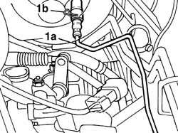
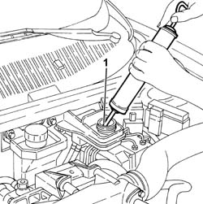
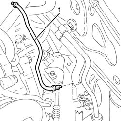

1820B50 hose damper - r r
- Path
- Procedures > 18 CLUTCH > 1820 CLUTCH RELEASE CONTROLS > 1820B HYDRAULIC CLUTCH SYSTEM > 1820B50 hose damper - r r
- Kind
- repair procedure (removal / refitting; the operation number is the code)
- Applies to
- engines: 1.6 TS , 1.8 TS, 2.5 V6, 1.9 JTD 8v , 2.4 JTD 10v; all production periods
- Interactive page
- https://sloeber94.github.io/elrnDB-a156/en/#/3237903
Applies to: engines: 1.6 TS , 1.8 TS; all production periods
 Removing
Removing
 Refitting
RefittingDisconnect the battery negative terminal.
 | Name | Connector |
|---|---|---|
- | Battery |
5530B52 Battery DRIP TRAY/SUPPORT - R.R.
Drain the brake-clutch fluid from the reservoir using a suitable syringe.
1. Release the flexible clip (1b) completely from its housing in the master cylinder and extract the pipe (1a) connector axially.

Applies to: engines: 1.6 TS , 1.8 TS; all production periods
Undo the connector for the pipe on the vibration damper and remove the pipe from the master cylinder to the vibration damper.
Applies to: engines: 1.6 TS , 1.8 TS; all production periods
Refitting
RemovingPosition the pipe from the master cylinder to the vibration damper.
Tighten the connector for the pipe on the vibration damper to torque.
 | Fastening | Component | Ø | Value (daNm) |
|---|---|---|---|---|
- | Connector | HOSE TO VIBRATION DAMPER | M12 | 1.7 - 1.9 |
Make sure that the pipe retaining clip is fully inserted in the housing on the master cylinder.
Fully introduce the connector for the pipe on the master cylinder until the flexible clip clicks and is positioned in the special housing for the actual connector.
1820B08 Clutch release HYDRAULIC SYSTEM - Bleeding air and restoring level
5530B52 Battery DRIP TRAY/SUPPORT - R.R.
Connect the battery negative terminal.
| Name | Connector |
|---|---|---|
- | Battery |
Applies to: engines: 2.5 V6, 1.9 JTD 8v , 2.4 JTD 10v; all production periods
Removing
Refitting5530B52 Battery DRIP TRAY/SUPPORT - R.R.
1. Drain the brake-clutch fluid from the reservoir using a suitable syringe.

Applies to: engines: 2.5 V6, 1.9 JTD 8v , 2.4 JTD 10v; all production periods
1. Undo the fittings and remove the hose from the master cylinder to the vibrations damper

Applies to: engines: 2.5 V6, 1.9 JTD 8v , 2.4 JTD 10v; all production periods
Refitting
RemovingFit the hose from the master cylinder to the vibrations damper and tighten the fittings to torque.
| Fastening | Component | Ø | Value (daNm) |
|---|---|---|---|---|
- | Connector | HOSE TO VIBRATION DAMPER | M12 | 1.7 - 1.9 |
1820B08 Clutch release HYDRAULIC SYSTEM - Bleeding air and restoring level